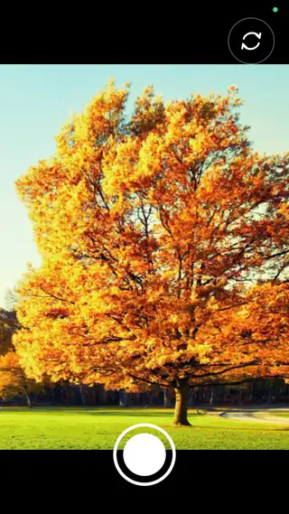

Lomo Camera
صور وتصميم
Lomo Camera is a deliberately tiny, single-purpose Android camera. It opens straight into a live cross-processed Lomo-style preview and saves the same look to the final JPEG. There are no filter menus, accounts, analytics, ads, gallery browser or network features. The app is designed to behave like
✓ ترخيص مفتوح (GPL-3.0-only) · آخر تحديث: 2026-11-06
1.3الإصدار
137 KBالحجم
GPL-3.0-onlyالرخصة
Open in Kanzتحميل APK (137 KB)
Download APK
SHA-256: 174a1e13496dbcba9328a5b8dee07da69cf4d7fdb0fc72b4f8296900c0f9564d

امسح الكود لفتح صفحة التطبيق
Scan to open this app page
لو كنز مش متثبت عندك: نزّل متجر كنز.
Not installed? Get the Kanz store.